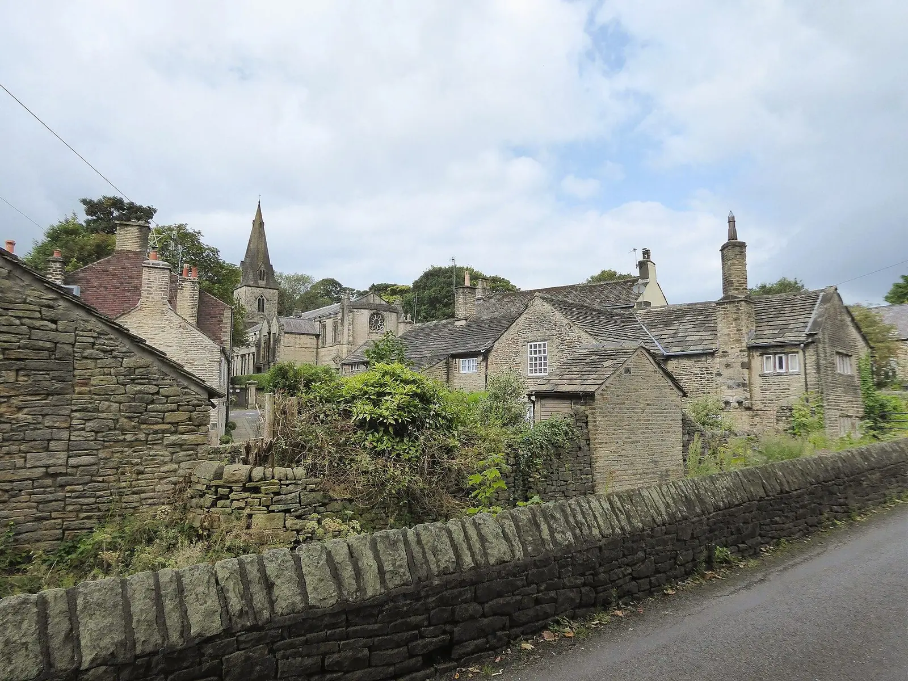
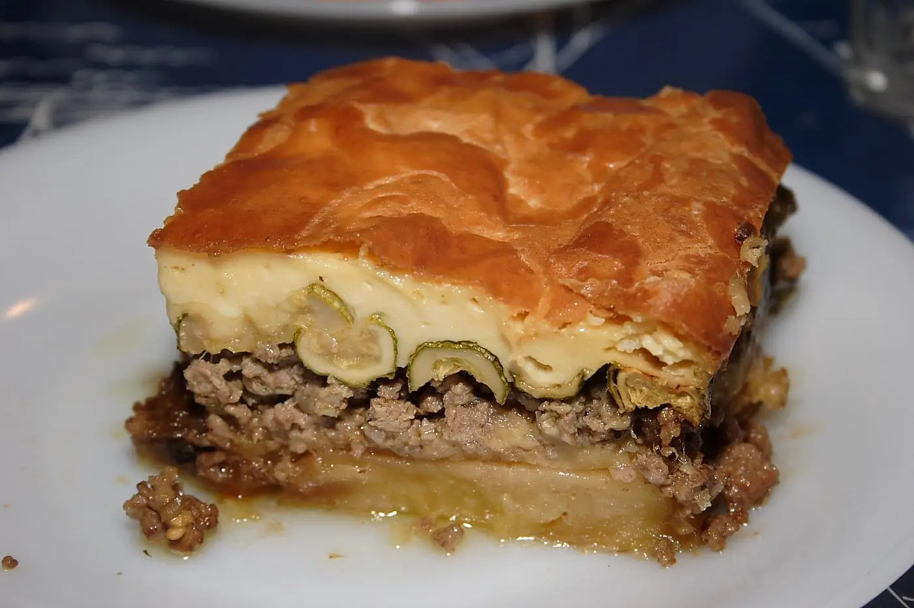
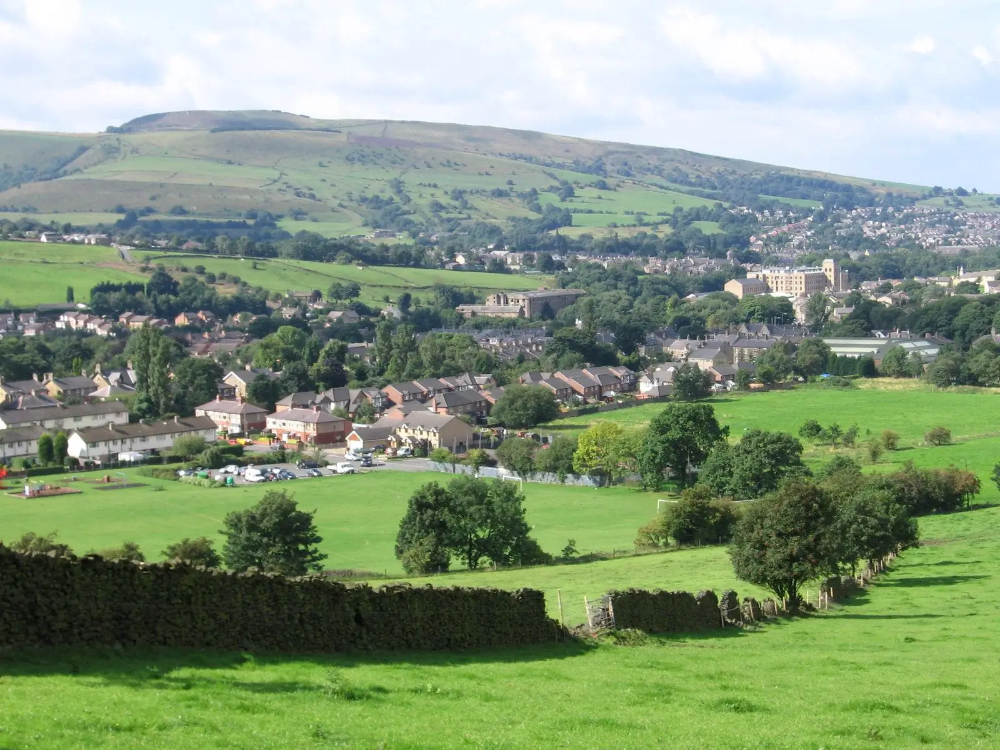

I · Arrive · Old Glossop, by the Peak District
The Wheatsheaf
Homemade food with English roots and a Greek-Mediterranean touch, real cask ales brewed less than 300 metres up the road, and a beer garden by the Peak District.
II · Pour
Brewed 300 metres away
A small bar with a wide selection of wines, beers and spirits, and real cask ales brewed less than 300 metres up the road.
300m to the brewery
Real cask ales, a wide selection of wines, beers and spirits.

III · Eat
English, with a Greek accent
We value homemade food. Close connections to Greece add a Mediterranean influence to traditional English dishes.
The Wheatsheaf has no set menu: dishes change weekly and this week's menu is posted on the pub's Facebook page. The kitchen is closed on Monday and Tuesday.
- Food served
- Wed–Sat 12:30–8pm
- Sun 12:30–7pm
- Kitchen
- Closed Mon & Tue

IV · Garden
Beer garden & dogs
Enjoy the view from the beer garden, or pop in after a walk along the hills and reservoirs. Dogs welcome.
Soft background music and friendly service in a small, family-run country-style pub.
V · Book
Pull up a stool
We are a small, family-run pub tucked away in Old Glossop. Since August 2018 we have worked hard to renovate the Wheatsheaf into a country-style pub where everyone feels welcome.
Opening hours
- Monday
- 5pm–11pm
- Tuesday
- 5pm–11pm
- Wednesday
- 12pm–11pm
- Thursday
- 12pm–11pm
- Friday
- 12pm–11:30pm
- Saturday
- 12pm–11:30pm
- Sunday
- 12pm–11pm
Food serving hours: Wednesday to Saturday 12:30–8pm, Sunday 12:30–7pm. Kitchen closed Monday and Tuesday.
Book a table
Call 01457 857008 or email glossopwheatsheaf@gmail.com to book a table for any occasion.
Call 01457 857008glossopwheatsheaf@gmail.com16 Well Gate, Glossop, Derbyshire SK13 7RS · Directions